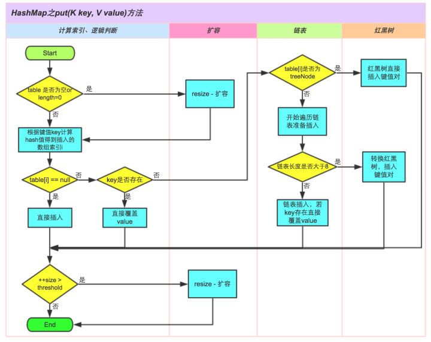

HashMap¶
HashMap 主要由数组和链表组成，他不是线程安全的。核心的点就是 put 插入数据的过程，get 查询数据以及扩容的方式。JDK1.7 和 1.8 的主要区别在于头插和尾插方式的修改，头插容易导致 HashMap 链表死循环，并且 1.8 之后加入红黑树对性能有提升。
put 插入数据流程¶
往 map 插入元素的时候首先通过对 key hash 然后与数组长度-1 进行与运算((n-1)&hash)，都是 2 的次幂所以等同于取模，但是位运算的效率更高。找到数组中的位置之后，如果数组中没有元素直接存入，反之则判断 key 是否相同，key 相同就覆盖，否则就会插入到链表的尾部，如果链表的长度超过 8，则会转换成红黑树，最后判断数组长度是否超过默认的长度*负载因子也就是 12，超过则进行扩容。
简介¶
Java 为数据结构中的映射定义了一个接口 java.util.Map，此接口主要有四个常用的实现类 ，分别是 HashMap、Hashtable、LinkedHashMap 和 TreeMap，类继承关系如下图所示：

下面针对各个实现类的特点做一些说明：
(1) HashMap：它根据键的 hashCode 值存储数据，大多数情况下可以直接定位到它的值，因而具有很快的访问速度，但遍历顺序却是不确定的。 HashMap 最多只允许一条记录的键为 null，允许多条记录的值为 null。HashMap 非线程安全，即任一时刻可以有多个线程同时写 HashMap，可能会导致数据的不一致。如果需要满足线程安全，可以用 Collections 的 synchronizedMap 方法使 HashMap 具有线程安全的能力，或者使用 ConcurrentHashMap。
(2) Hashtable：Hashtable 是遗留类，很多映射的常用功能与 HashMap 类似，不同的是它承自 Dictionary 类，并且是线程安全的，任一时间只有一个线程能写 Hashtable，并发性不如 ConcurrentHashMap，因为 ConcurrentHashMap 引入了分段锁。Hashtable 不建议在新代码中使用，不需要线程安全的场合可以用 HashMap 替换，需要线程安全的场合可以用 ConcurrentHashMap 替换。
(3) LinkedHashMap：LinkedHashMap 是 HashMap 的一个子类，保存了记录的插入顺序，在用 Iterator 遍历 LinkedHashMap 时，先得到的记录肯定是先插入的，也可以在构造时带参数，按照访问次序排序。
(4) TreeMap：TreeMap 实现 SortedMap 接口，能够把它保存的记录根据键排序，默认是按键值的升序排序，也可以指定排序的比较器，当用 Iterator 遍历 TreeMap 时，得到的记录是排过序的。如果使用排序的映射，建议使用 TreeMap。在使用 TreeMap 时，key 必须实现 Comparable 接口或者在构造 TreeMap 传入自定义的 Comparator，否则会在运行时抛出 java.lang.ClassCastException 类型的异常。
对于上述四种 Map 类型的类，要求映射中的 key 是不可变对象。不可变对象是该对象在创建后它的哈希值不会被改变。如果对象的哈希值发生变化，Map 对象很可能就定位不到映射的位置了。
通过上面的比较，我们知道了 HashMap 是 Java 的 Map 家族中一个普通成员，鉴于它可以满足大多数场景的使用条件，所以是使用频度最高的一个。下文我们主要结合源码，从存储结构、常用方法分析、扩容以及安全性等方面深入讲解 HashMap 的工作原理。
内部实现¶
搞清楚 HashMap，首先需要知道 HashMap 是什么，即它的存储结构-字段；其次弄明白它能干什么，即它的功能实现-方法。下面我们针对这两个方面详细展开讲解。
存储结构-字段 从结构实现来讲，HashMap 是数组+链表+红黑树（JDK1.8 增加了红黑树部分）实现的，如下如所示。

这里需要讲明白两个问题：数据底层具体存储的是什么？这样的存储方式有什么优点呢？
(1) 从源码可知，HashMap 类中有一个非常重要的字段，就是 Node[] table，即哈希桶数组，明显它是一个 Node 的数组。我们来看 Node[JDK1.8]是何物。
static class Node<K,V> implements Map.Entry<K,V> {
final int hash; //用来定位数组索引位置
final K key; //链表的下一个node
V value;
Node<K,V> next;
Node(int hash, K key, V value, Node<K,V> next) {
this.hash = hash;
this.key = key;
this.value = value;
this.next = next;
}
public final K getKey() { return key; }
public final V getValue() { return value; }
public final String toString() { return key + "=" + value; }
public final int hashCode() {
return Objects.hashCode(key) ^ Objects.hashCode(value);
}
public final V setValue(V newValue) {
V oldValue = value;
value = newValue;
return oldValue;
}
public final boolean equals(Object o) {
if (o == this)
return true;
if (o instanceof Map.Entry) {
Map.Entry<?,?> e = (Map.Entry<?,?>)o;
if (Objects.equals(key, e.getKey()) &&
Objects.equals(value, e.getValue()))
return true;
}
return false;
}
}
Node 是 HashMap 的一个内部类，实现了 Map.Entry 接口，本质是就是一个映射(键值对)。上图中的每个黑色圆点就是一个 Node 对象。
(2) HashMap 就是使用哈希表来存储的。哈希表为解决冲突，可以采用开放地址法和链地址法等来解决问题，Java 中 HashMap 采用了链地址法。 链地址法，简单来说，就是数组加链表的结合。在每个数组元素上都一个链表结构，当数据被 Hash 后，得到数组下标，把数据放在对应下标元素的链表上。
系统将调用"key"这个 key 的 hashCode()方法得到其 hashCode 值（该方法适用于每个 Java 对象），然后再通过 Hash 算法的后两步运算（高位运算和取模运算，下文有介绍）来定位该键值对的存储位置，有时两个 key 会定位到相同的位置，表示发生了 Hash 碰撞。当然 Hash 算法计算结果越分散均匀，Hash 碰撞的概率就越小，map 的存取效率就会越高。
如果哈希桶数组很大，即使较差的 Hash 算法也会比较分散，如果哈希桶数组数组很小，即使好的 Hash 算法也会出现较多碰撞，所以就需要在空间成本和时间成本之间权衡，其实就是在根据实际情况确定哈希桶数组的大小，并在此基础上设计好的 hash 算法减少 Hash 碰撞。那么通过什么方式来控制 map 使得 Hash 碰撞的概率又小，哈希桶数组（Node[] table）占用空间又少呢？答案就是好的 Hash 算法和扩容机制。
在理解 Hash 和扩容流程之前，我们得先了解下 HashMap 的几个字段。从 HashMap 的默认构造函数源码可知，构造函数就是对下面几个字段进行初始化，源码如下：
首先，Node[] table 的初始化长度 length(默认值是 16)，Load factor 为负载因子(默认值是 0.75)，threshold 是 HashMap 所能容纳的最大数据量的 Node(键值对)个数。threshold = length * Load factor。也就是说，在数组定义好长度之后，负载因子越大，所能容纳的键值对个数越多。
结合负载因子的定义公式可知，threshold 就是在此 Load factor 和 length(数组长度)对应下允许的最大元素数目，超过这个数目就重新 resize(扩容)，扩容后的 HashMap 容量是之前容量的两倍。默认的负载因子 0.75 是对空间和时间效率的一个平衡选择，建议大家不要修改，除非在时间和空间比较特殊的情况下，如果内存空间很多而又对时间效率要求很高，可以降低负载因子 Load factor 的值；相反，如果内存空间紧张而对时间效率要求不高，可以增加负载因子 loadFactor 的值，这个值可以大于 1。
size 这个字段其实很好理解，就是 HashMap 中实际存在的键值对数量。注意和 table 的长度 length、容纳最大键值对数量 threshold 的区别。而 modCount 字段主要用来记录 HashMap 内部结构发生变化的次数，主要用于迭代的快速失败。强调一点，内部结构发生变化指的是结构发生变化，例如 put 新键值对，但是某个 key 对应的 value 值被覆盖不属于结构变化。
在 HashMap 中，哈希桶数组 table 的长度 length 大小必须为 2 的 n 次方(一定是合数)，这是一种非常规的设计，常规的设计是把桶的大小设计为素数。相对来说素数导致冲突的概率要小于合数，具体证明可以参考http://blog.csdn.net/liuqiyao_01/article/details/14475159，Hashtable初始化桶大小为11，就是桶大小设计为素数的应用（Hashtable扩容后不能保证还是素数）。HashMap采用这种非常规设计，主要是为了在取模和扩容时做优化，同时为了减少冲突，HashMap定位哈希桶索引位置时，也加入了高位参与运算的过程。
这里存在一个问题，即使负载因子和 Hash 算法设计的再合理，也免不了会出现拉链过长的情况，一旦出现拉链过长，则会严重影响 HashMap 的性能。于是，在 JDK1.8 版本中，对数据结构做了进一步的优化，引入了红黑树。而当链表长度太长（默认超过 8）时，链表就转换为红黑树，利用红黑树快速增删改查的特点提高 HashMap 的性能，其中会用到红黑树的插入、删除、查找等算法。本文不再对红黑树展开讨论，想了解更多红黑树数据结构的工作原理可以参考http://blog.csdn.net/v_july_v/article/details/6105630。
功能实现-方法¶
HashMap 的内部功能实现很多，本文主要从根据 key 获取哈希桶数组索引位置、put 方法的详细执行、扩容过程三个具有代表性的点深入展开讲解。
确定哈希桶数组索引位置¶
不管增加、删除、查找键值对，定位到哈希桶数组的位置都是很关键的第一步。前面说过 HashMap 的数据结构是数组和链表的结合，所以我们当然希望这个 HashMap 里面的元素位置尽量分布均匀些，尽量使得每个位置上的元素数量只有一个，那么当我们用 hash 算法求得这个位置的时候，马上就可以知道对应位置的元素就是我们要的，不用遍历链表，大大优化了查询的效率。 HashMap 定位数组索引位置，直接决定了 hash 方法的离散性能。先看看源码的实现(方法一+方法二):
方法一：
static final int hash(Object key) { //jdk1.8 & jdk1.7
int h;
// h = key.hashCode() 为第一步 取hashCode值
// h ^ (h >>> 16) 为第二步 高位参与运算
return (key == null) ? 0 : (h = key.hashCode()) ^ (h >>> 16);
}
方法二：
static int indexFor(int h, int length) { //jdk1.7的源码，jdk1.8没有这个方法，但是实现原理一样的
return h & (length-1); //第三步 取模运算
}
这里的 Hash 算法本质上就是三步：取 key 的 hashCode 值、高位运算、取模运算。
对于任意给定的对象，只要它的 hashCode()返回值相同，那么程序调用方法一所计算得到的 Hash 码值总是相同的。我们首先想到的就是把 hash 值对数组长度取模运算，这样一来，元素的分布相对来说是比较均匀的。但是，模运算的消耗还是比较大的，在 HashMap 中是这样做的：调用方法二来计算该对象应该保存在 table 数组的哪个索引处。
这个方法非常巧妙，它通过 h & (table.length -1)来得到该对象的保存位，而 HashMap 底层数组的长度总是 2 的 n 次方，这是 HashMap 在速度上的优化。当 length 总是 2 的 n 次方时，h& (length-1)运算等价于对 length 取模，也就是 h%length，但是&比%具有更高的效率。
在 JDK1.8 的实现中，优化了高位运算的算法，通过 hashCode()的高 16 位异或低 16 位实现的：(h = k.hashCode()) ^ (h >>> 16)，主要是从速度、功效、质量来考虑的，这么做可以在数组 table 的 length 比较小的时候，也能保证考虑到高低 Bit 都参与到 Hash 的计算中，同时不会有太大的开销。
下面举例说明下，n 为 table 的长度。

分析 HashMap 的 put 方法¶
HashMap 的 put 方法执行过程可以通过下图来理解，自己有兴趣可以去对比源码更清楚地研究学习。

①.判断键值对数组 table[i]是否为空或为 null，否则执行 resize()进行扩容；
②.根据键值 key 计算 hash 值得到插入的数组索引 i，如果 table[i]==null，直接新建节点添加，转向 ⑥，如果 table[i]不为空，转向 ③；
③.判断 table[i]的首个元素是否和 key 一样，如果相同直接覆盖 value，否则转向 ④，这里的相同指的是 hashCode 以及 equals；
④.判断 table[i] 是否为 treeNode，即 table[i] 是否是红黑树，如果是红黑树，则直接在树中插入键值对，否则转向 ⑤；
⑤.遍历 table[i]，判断链表长度是否大于 8，大于 8 的话把链表转换为红黑树，在红黑树中执行插入操作，否则进行链表的插入操作；遍历过程中若发现 key 已经存在直接覆盖 value 即可；
⑥.插入成功后，判断实际存在的键值对数量 size 是否超多了最大容量 threshold，如果超过，进行扩容。
JDK1.8HashMap 的 put 方法源码如下:
public V put(K key, V value) {
// 对key的hashCode()做hash
return putVal(hash(key), key, value, false, true);
}
final V putVal(int hash, K key, V value, boolean onlyIfAbsent,
boolean evict) {
Node<K,V>[] tab; Node<K,V> p; int n, i;
// 步骤①：tab为空则创建
if ((tab = table) == null || (n = tab.length) == 0)
n = (tab = resize()).length;
// 步骤②：计算index，并对null做处理
if ((p = tab[i = (n - 1) & hash]) == null)
tab[i] = newNode(hash, key, value, null);
else {
Node<K,V> e; K k;
// 步骤③：节点key存在，直接覆盖value
if (p.hash == hash &&
((k = p.key) == key || (key != null && key.equals(k))))
e = p;
// 步骤④：判断该链为红黑树
else if (p instanceof TreeNode)
e = ((TreeNode<K,V>)p).putTreeVal(this, tab, hash, key, value);
// 步骤⑤：该链为链表
else {
for (int binCount = 0; ; ++binCount) {
if ((e = p.next) == null) {
p.next = newNode(hash, key,value,null);
//链表长度大于8转换为红黑树进行处理
if (binCount >= TREEIFY_THRESHOLD - 1) // -1 for 1st
treeifyBin(tab, hash);
break;
}
// key已经存在直接覆盖value
if (e.hash == hash &&
((k = e.key) == key || (key != null && key.equals(k)))) break;
p = e;
}
}
if (e != null) { // existing mapping for key
V oldValue = e.value;
if (!onlyIfAbsent || oldValue == null)
e.value = value;
afterNodeAccess(e);
return oldValue;
}
}
++modCount;
// 步骤⑥：超过最大容量 就扩容
if (++size > threshold)
resize();
afterNodeInsertion(evict);
return null;
}
扩容机制¶
扩容(resize)就是重新计算容量，向 HashMap 对象里不停的添加元素，而 HashMap 对象内部的数组无法装载更多的元素时，对象就需要扩大数组的长度，以便能装入更多的元素。当然 Java 里的数组是无法自动扩容的，方法是使用一个新的数组代替已有的容量小的数组，就像我们用一个小桶装水，如果想装更多的水，就得换大水桶。
我们分析下 resize 的源码，鉴于 JDK1.8 融入了红黑树，较复杂，为了便于理解我们仍然使用 JDK1.7 的代码，好理解一些，本质上区别不大，具体区别后文再说。
void resize(int newCapacity) { //传入新的容量
Entry[] oldTable = table; //引用扩容前的Entry数组
int oldCapacity = oldTable.length;
if (oldCapacity == MAXIMUM_CAPACITY) { //扩容前的数组大小如果已经达到最大(2^30)了
threshold = Integer.MAX_VALUE; //修改阈值为int的最大值(2^31-1)，这样以后就不会扩容了
return;
}
Entry[] newTable = new Entry[newCapacity]; //初始化一个新的Entry数组
transfer(newTable); //！！将数据转移到新的Entry数组里
table = newTable; //HashMap的table属性引用新的Entry数组
threshold = (int)(newCapacity * loadFactor);//修改阈值
}
这里就是使用一个容量更大的数组来代替已有的容量小的数组，transfer()方法将原有 Entry 数组的元素拷贝到新的 Entry 数组里。
void transfer(Entry[] newTable) {
Entry[] src = table; //src引用了旧的Entry数组
int newCapacity = newTable.length;
for (int j = 0; j < src.length; j++) { //遍历旧的Entry数组
Entry<K,V> e = src[j]; //取得旧Entry数组的每个元素
if (e != null) {
src[j] = null;//释放旧Entry数组的对象引用（for循环后，旧的Entry数组不再引用任何对象）
do {
Entry<K,V> next = e.next;
int i = indexFor(e.hash, newCapacity); //！！重新计算每个元素在数组中的位置
e.next = newTable[i]; //标记[1]
newTable[i] = e; //将元素放在数组上
e = next; //访问下一个Entry链上的元素
} while (e != null);
}
}
}
newTable[i]的引用赋给了 e.next，也就是使用了单链表的头插入方式，同一位置上新元素总会被放在链表的头部位置；这样先放在一个索引上的元素终会被放到 Entry 链的尾部(如果发生了 hash 冲突的话），这一点和 Jdk1.8 有区别，下文详解。在旧数组中同一条 Entry 链上的元素，通过重新计算索引位置后，有可能被放到了新数组的不同位置上。
下面举个例子说明下扩容过程。假设了我们的 hash 算法就是简单的用 key mod 一下表的大小（也就是数组的长度）。其中的哈希桶数组 table 的 size=2， 所以 key = 3、7、5，put 顺序依次为 5、7、3。在 mod 2 以后都冲突在 table[1]这里了。这里假设负载因子 loadFactor=1，即当键值对的实际大小 size 大于 table 的实际大小时进行扩容。接下来的三个步骤是哈希桶数组 resize 成 4，然后所有的 Node 重新 rehash 的过程。

下面我们讲解下 JDK1.8 做了哪些优化。经过观测可以发现，我们使用的是 2 次幂的扩展(指长度扩为原来 2 倍)，所以，元素的位置要么是在原位置， 要么是在原位置再移动 2 次幂的位置。看下图可以明白这句话的意思，n 为 table 的长度，图（a）表示扩容前的 key1 和 key2 两种 key 确定索引位置的示例，图（b）表示扩容后 key1 和 key2 两种 key 确定索引位置的示例，其中 hash1 是 key1 对应的哈希与高位运算结果。

元素在重新计算 hash 之后，因为 n 变为 2 倍，那么 n-1 的 mask 范围在高位多 1bit(红色)，因此新的 index 就会发生这样的变化：
因此，我们在扩充 HashMap 的时候，不需要像 JDK1.7 的实现那样重新计算 hash，只需要看看原来的 hash 值新增的那个 bit 是 1 还是 0 就好了，是 0 的话索引没变，是 1 的话索引变成“原索引+oldCap”，可以看看下图为 16 扩充为 32 的 resize 示意图：

这个设计确实非常的巧妙，既省去了重新计算 hash 值的时间，而且同时，由于新增的 1bit 是 0 还是 1 可以认为是随机的，因此 resize 的过程，均匀的把之前的冲突的节点分散到新的 bucket 了。这一块就是 JDK1.8 新增的优化点。有一点注意区别，JDK1.7 中 rehash 的时候，旧链表迁移新链表的时候，如果在新表的数组索引位置相同，则链表元素会倒置，但是从上图可以看出，JDK1.8 不会倒置。有兴趣的同学可以研究下 JDK1.8 的 resize 源码，写的很赞，如下:
final Node<K,V>[] resize() {
Node<K,V>[] oldTab = table;
int oldCap = (oldTab == null) ? 0 : oldTab.length;
int oldThr = threshold;
int newCap, newThr = 0;
if (oldCap > 0) {
// 超过最大值就不再扩充了，就只好随你碰撞去吧
if (oldCap >= MAXIMUM_CAPACITY) {
threshold = Integer.MAX_VALUE;
return oldTab;
}
// 没超过最大值，就扩充为原来的2倍
else if ((newCap = oldCap << 1) < MAXIMUM_CAPACITY &&
oldCap >= DEFAULT_INITIAL_CAPACITY)
newThr = oldThr << 1; // double threshold
}
else if (oldThr > 0) // initial capacity was placed in threshold
newCap = oldThr;
else { // zero initial threshold signifies using defaults
newCap = DEFAULT_INITIAL_CAPACITY;
newThr = (int)(DEFAULT_LOAD_FACTOR * DEFAULT_INITIAL_CAPACITY);
}
// 计算新的resize上限
if (newThr == 0) {
float ft = (float)newCap * loadFactor;
newThr = (newCap < MAXIMUM_CAPACITY && ft < (float)MAXIMUM_CAPACITY ?
(int)ft : Integer.MAX_VALUE);
}
threshold = newThr;
@SuppressWarnings({"rawtypes"，"unchecked"})
Node<K,V>[] newTab = (Node<K,V>[])new Node[newCap];
table = newTab;
if (oldTab != null) {
// 把每个bucket都移动到新的buckets中
for (int j = 0; j < oldCap; ++j) {
Node<K,V> e;
if ((e = oldTab[j]) != null) {
oldTab[j] = null;
if (e.next == null)
newTab[e.hash & (newCap - 1)] = e;
else if (e instanceof TreeNode)
((TreeNode<K,V>)e).split(this, newTab, j, oldCap);
else { // 链表优化重hash的代码块
Node<K,V> loHead = null, loTail = null;
Node<K,V> hiHead = null, hiTail = null;
Node<K,V> next;
do {
next = e.next;
// 原索引
if ((e.hash & oldCap) == 0) {
if (loTail == null)
loHead = e;
else
loTail.next = e;
loTail = e;
}
// 原索引+oldCap
else {
if (hiTail == null)
hiHead = e;
else
hiTail.next = e;
hiTail = e;
}
} while ((e = next) != null);
// 原索引放到bucket里
if (loTail != null) {
loTail.next = null;
newTab[j] = loHead;
}
// 原索引+oldCap放到bucket里
if (hiTail != null) {
hiTail.next = null;
newTab[j + oldCap] = hiHead;
}
}
}
}
}
return newTab;
}
线程安全性¶
在多线程使用场景中，应该尽量避免使用线程不安全的 HashMap，而使用线程安全的 ConcurrentHashMap。那么为什么说 HashMap 是线程不安全的，下面举例子说明在并发的多线程使用场景中使用 HashMap 可能造成死循环。代码例子如下(便于理解，仍然使用 JDK1.7 的环境)：
public class HashMapInfiniteLoop {
private static HashMap<Integer,String> map = new HashMap<Integer,String>(2，0.75f);
public static void main(String[] args) {
map.put(5， "C");
new Thread("Thread1") {
public void run() {
map.put(7, "B");
System.out.println(map);
};
}.start();
new Thread("Thread2") {
public void run() {
map.put(3, "A);
System.out.println(map);
};
}.start();
}
}
其中，map 初始化为一个长度为 2 的数组，loadFactor=0.75，threshold=2*0.75=1，也就是说当 put 第二个 key 的时候，map 就需要进行 resize。
通过设置断点让线程 1 和线程 2 同时 debug 到 transfer 方法(3.3 小节代码块)的首行。注意此时两个线程已经成功添加数据。放开 thread1 的断点至 transfer 方法的“Entry next = e.next;” 这一行；然后放开线程 2 的的断点，让线程 2 进行 resize。结果如下图。

注意，Thread1 的 e 指向了 key(3)，而 next 指向了 key(7)，其在线程二 rehash 后，指向了线程二重组后的链表。
线程一被调度回来执行，先是执行 newTalbe[i] = e， 然后是 e = next，导致了 e 指向了 key(7)，而下一次循环的 next = e.next 导致了 next 指向了 key(3)。

e.next = newTable[i] 导致 key(3).next 指向了 key(7)。注意：此时的 key(7).next 已经指向了 key(3)， 环形链表就这样出现了。
于是，当我们用线程一调用 map.get(11)时，悲剧就出现了——Infinite Loop。
HashMap 的 keySet()和 values()¶
我们通常说，keySet()返回所有的键，values()返回所有的值，其实是不太对的，因为无论是 keySet()和 values()，其实都没有实质的内容，且容我慢慢说来。
他们前者返回了一个 Set，后者返回了一个 Collection，但是 Set 和 Collection 都只是接口，既然是接口，那就大有文章可以做。很重要的一点就是，接口可以不是 new someClass()的来的，也就是说，它可以不对应与一个类，而只提供一些方法。实际上，HashMap 中所有的数据都是放在一个 Node
不信？我们可以看源码。
首先来看 values 方法：
public Collection<V> values() {
Collection<V> vs = values;
if (vs == null) {
vs = new Values();
values = vs;
}
return vs;
}
可以看到 values 其实是返回了一个 Values 类的，这是个内部类，就在它后面：
final class Values extends AbstractCollection<V> {
public final int size() { return size; }
public final void clear() { HashMap.this.clear(); }
public final Iterator<V> iterator() { return new ValueIterator(); }
public final boolean contains(Object o) { return containsValue(o); }
public final Spliterator<V> spliterator() {
return new ValueSpliterator<>(HashMap.this, 0, -1, 0, 0);
}
public final void forEach(Consumer<? super V> action) {
Node<K,V>[] tab;
if (action == null)
throw new NullPointerException();
if (size > 0 && (tab = table) != null) {
int mc = modCount;
for (int i = 0; i < tab.length; ++i) {
for (Node<K,V> e = tab[i]; e != null; e = e.next)
action.accept(e.value);
}
if (modCount != mc)
throw new ConcurrentModificationException();
}
}
}
看到没有，完全没有提供新数据，完全是操作那个 table，或者调用 hashMap 自己的方法。我之前傻呵呵的找源码是怎么为 values（HashMap 除了有 values 这个方法，还有一个属性也叫 values，坑爹不？）赋值的，现在才知道自己是这么傻，因为根本就没有复制嘛。
再来看 keySet，也是一样的思路：
public Set<K> keySet() {
Set<K> ks = keySet;
if (ks == null) {
ks = new KeySet();
keySet = ks;
}
return ks;
}
final class KeySet extends AbstractSet<K> {
public final int size() { return size; }
public final void clear() { HashMap.this.clear(); }
public final Iterator<K> iterator() { return new KeyIterator(); }
public final boolean contains(Object o) { return containsKey(o); }
public final boolean remove(Object key) {
return removeNode(hash(key), key, null, false, true) != null;
}
public final Spliterator<K> spliterator() {
return new KeySpliterator<>(HashMap.this, 0, -1, 0, 0);
}
public final void forEach(Consumer<? super K> action) {
Node<K,V>[] tab;
if (action == null)
throw new NullPointerException();
if (size > 0 && (tab = table) != null) {
int mc = modCount;
for (int i = 0; i < tab.length; ++i) {
for (Node<K,V> e = tab[i]; e != null; e = e.next)
action.accept(e.key);
}
if (modCount != mc)
throw new ConcurrentModificationException();
}
}
}